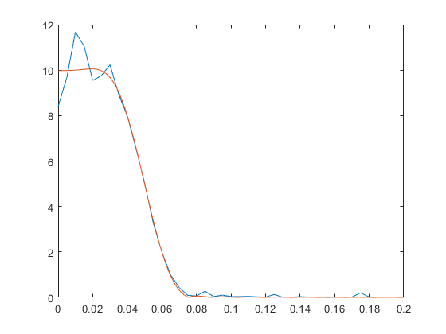

Nb = 100;
Ns = 128;
p.beta = 0.5;
p.fs = 0.1;
p.root = 0;
M = 64;
[h f H Hi] = win_method('rc_filt', p, 0.2, 1, M, 0);
x = randn(Ns*Nb, 1);
stype = 1;
if stype==0,
y = conv(x, h);
elseif stype==1,
state_fir1 = fir_init(h,Ns);
xb = reshape(x, Ns, Nb);
yb = zeros(Ns, Nb);
for bi=1:Nb
[state_fir1 yb(:,bi)] = fir(state_fir1, xb(:,bi));
end
y = reshape(yb, Ns*Nb, 1);
else
error('Invalid simulation type.');
end
Npsd = 200;
[Y1 f1] = periodogram(y, [], Npsd, 1);
[X1 f1] = periodogram(x, [], Npsd, 1);
plot(f1, abs(sqrt(Y1./X1)), f, abs(H));
xlim([0 0.2]);
